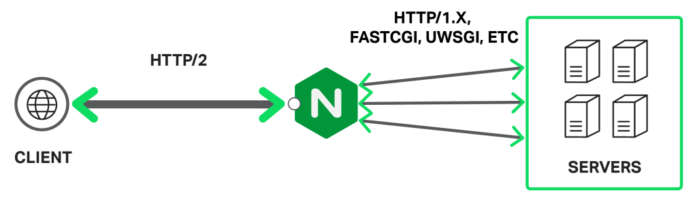
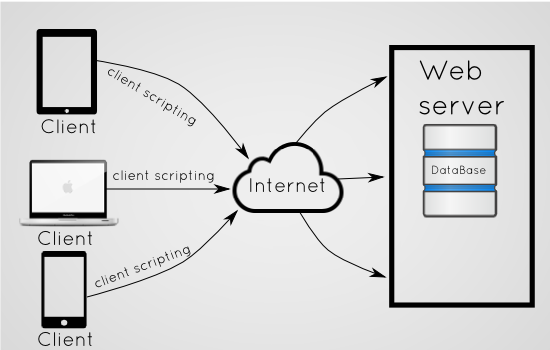

programming is the process of taking an algorithm and encoding it into a notation, a programming language, so that it can be executed by a computer. Although many programming languages and many different types of computers exist, the important first step is the need to have the solution. Click here to view our courses.
The client-side environment used to run scripts is usually a browser. The processing takes place on the end users computer. The source code is transferred from the web server to the users computer over the internet and run directly in the browser. The scripting language needs to be enabled on the client computer.
Server-side scripting is a technique used in web development which involves employing scripts on a web server which produce a response customized for each user's (client's) request to the website. The alternative is for the web server itself to deliver a static web page.
Hardwares are the soul of the Computers. They are the end command recievers.Computer hardware is the physical parts or components of a computer, such as the monitor, keyboard, computer data storage, graphic card, sound card and motherboard. By contrast, software is instructions that can be stored and ran by hardware.
-Hostel (B) 301 rajkot,Gujarat. India.
Send Feedback: akash.trivedi14665@marwadieducation.edu.in
Mobile-+918980702003
Follow Us on: